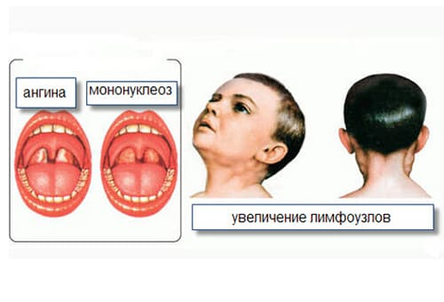
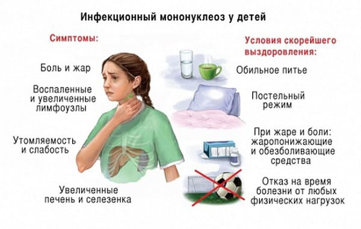

Вирус инфекционного мононуклеоза распространен довольно широко. Эта болезнь совсем не редкая, но протекающая, как правило, в легких формах, а эти самые легкие формы весьма трудны для диагностики.
Принципиальная особенность вируса – «любовь» его к так называемой лимфоидной ткани. Что такое лимфоидная ткань и где она находится? Да почти везде! Это все (!) лимфоузлы, миндалины, печень, селезенка. И все эти органы поражаются при мононуклеозе.
Дети в возрасте до 2-х лет нечасто болеют мононуклеозом, а если все-таки болеют, то, как правило, легко. Излюбленные «жертвы» мононуклеоза – дети старше 3-х лет и не очень старые взрослые (до 40).
Вирус выделяется во внешнюю среду со слюной больного. Заразиться легче всего при поцелуях или через игрушки, но можно и воздушно-капельным путем. Вирус не очень заразен и заболевания почти никогда не носят характер эпидемий – все больше единичные случаи. Зато у мальчиков эти «единичные случаи» почему-то встречаются чаще. Инкубационный период весьма изменчив и во многом определяется состоянием иммунитета зараженного: ориентировочный интервал – от 5 дней до 2 месяцев.
Симптомы мононуклеоза определяются воспалительными процессами в тех органах, которые поражает вирус: увеличиваются все группы лимфоузлов, одни больше, другие меньше, но увеличиваются все – больше всего шейные. В свою очередь, увеличиваются печень и селезенка. Появляется воспаление миндалин (ангина), отек аденоидной ткани (в носу) приводит к тому, что ребенок, во-первых, дышит ртом, а во-вторых, начинает просто-таки жутко храпеть. Помимо всех этих конкретных мононуклеозных признаков, имеются и общие не специфические признаки – и температура повышается, и есть не хочется, и глотать больно, и вялость и т. п.

Установить диагноз инфекционного мононуклеоза во многом помогает клинический анализ крови. Дело в том, что мононуклеозный вирус специфически поражает клетки крови и при ее (крови) исследовании врачи обнаруживают особые клетки, которых в норме нет. Клетки эти называются «атипичные мононуклеары» – от слова «мононуклеары» и пошло, кстати, название самой болезни.
Таким образом, типичный мононуклеоз выглядит так: ангина + храп по ночам с затрудненным дыханием днем + увеличение печени, селезенки и лимфоузлов + изменения в крови.
Что необходимо знать:
• Острый период заболевания длится, в среднем, 2–3 недели и, как бы плохо ни было, все выздоравливают.
• Лимфоидная система – одно из важнейших звеньев системы иммунитета. Неудивительно, что ее поражение делает человека весьма уязвимым к другим инфекциям. Короче говоря, на фоне мононуклеоза «подцепить» другую болячку очень и очень легко. Отсюда частота осложнений, вызванных уже не вирусами, а бактериями – возможны и высоко вероятны ангина, отит, воспаление легких.
• Осложнения мононуклеоза лечатся, как правило, антибиотиками, при этом имеет место совершенно удивительный факт, не находящий до настоящего времени точного объяснения. Суть этого явления в том, что применение заслуженно популярных антибиотиков ампициллина и амоксициллина именно при мононуклеозе в 95 % случаев сопровождается появлением сыпи. Еще раз подчеркну, почему это происходит, никто толком не знает.

• После острого периода болезни, когда все основные симптомы исчезают, ребенок остается весьма ослабленным – необходимо время для полного восстановления системы иммунитета. Такому ребенку на 6–12 месяцев прекращают прививки, следует, по возможности, максимально ограничивать контакты с людьми. Противопоказано пребывание на солнце, да и вообще любые дальние поездки на моря нежелательны.
• Само лечение мононуклеоза большей частью симптоматическое. В очень тяжелых случаях назначают гормональные противовоспалительные препараты, но, как правило, дело до этого не доходит. А так все по «стандартам» вирусных инфекций – покой, диета, свежий воздух, обильное питье, витамины, пополоскать горло, промывать нос, принимать парацетамол.
• При выявлении инфекционного мононуклеоза в детском коллективе никаких карантинов и особых дезинфекций не устраивают. Тщательной влажной уборки более чем достаточно.
• Вирус мононуклеоза, как это ни печально, обладает онкогенной активностью. Все это встречается не особенно часто, просто следует знать, что если после перенесенного мононуклеоза долго не восстанавливается нормальная кровь (имеется в виду – не исчезают атипичные мононуклеары, да и другие изменения могут присутствовать), то такие дети в обязательном порядке должны состоять на учете и регулярно осматриваться врачом-гематологом.
Е.О.Комаровский. "Здоровье ребенка"